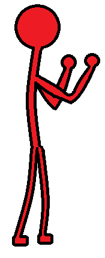
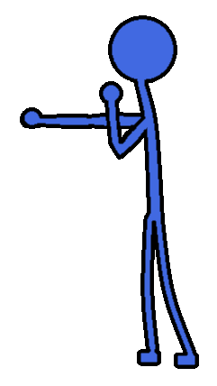

Free To Download Game Assets
Please review Creative Commons Linceses included below each for usage.
Hallway Fight! Stick Figures
Originally created for and used in "Hallway Fight!", these masterwork stick figure frames are being used to protoype our future pixel art games. These include cardinal direction versions of running, punching, winding-up, falling, and idling. Comes in both red and blue colors for distinction between characters and enemies because we are just that generous. The goal is for these to be just enough to test 2D animation features as you learn a new game engine.
 Hallway Fight Stick Figures by Thomas Bruner is marked with CC0 1.0

"Best So Far"
Piano medley combining several short pieces written and performed by Tommy Bruner.
Best So Far by Thomas Bruner is licensed under CC BY-SA 4.0